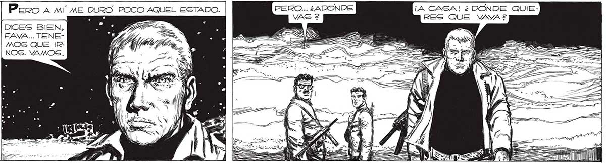
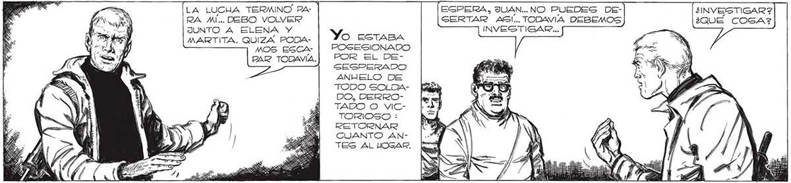
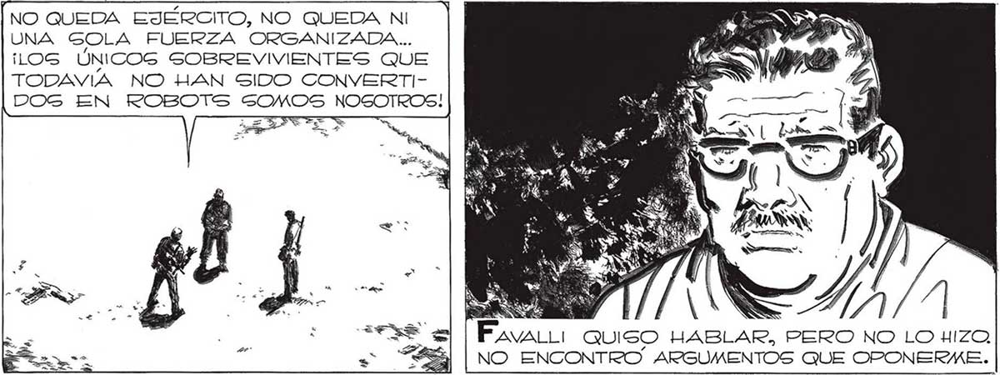

PERO... ¿ADONDE ¡A CASA! ¿ DÓNDE QUIERES QUE VAYA 2 G DICES BIEN, ALVADOG DE FAVA... TENELA MUERTE, MOS QUE IRNO SABIAMOS NOS. VAMOS. QUÉ HACER. TAN CONVENCIH DOS HABIAMOS ESTADO DE NUESTRO FIN, QUE AHORA, SOBREVIVIENTES, ESTABAMOS PERPLEJOS, ATURDIDOS . 246 Piro A Mí ME DURO. POCO AQUEL ESTADO. A = == LA LUCHA TERMINO PA- EGPERA, JUAN... NO PUEDES DE- ¿INVESTIGAR? RA MI... DEBO VOLVER GERTAR ASI... TODAVIA DEBEMOS ¿QUÉ COGA? JUNTO A ELENA Y y, INVESTIGAR... MARTITA. QUIZA PODA- O ESTABA AOS ESA: POSESONADO PAR TODAVÍA.| POR EL DESESPERADO ANHELO DE TODO SOLDADO, DERROTADO O VICTORIOSO : RETORNAR CUANTO ANTES AL HOGAR. NO QUEDA EJÉRCITO, NO QUEDA NI UNA GOLA FUERZA ORGANIZADA... ¡LOS ÚNICOS SOBREVIVIENTES QUE TODAVÍA NO HAN SIDO CONVERTIDOG EN ROBOTS SOMOS NOSOTROS! E NS ¿COMO ES LA CARA DE LOS ELLOS? ¿PARA QUÉ? ¿ACASO ALGUIEN PUEDE UTILIZAR YA LO QUE pS ERA a | Ñ Fano QUISO HABLAR, PERO NO LO HIZO, NO ENCONTRO ARGUMENTOS QUE OPONERME. So a Ys S 3 = >


